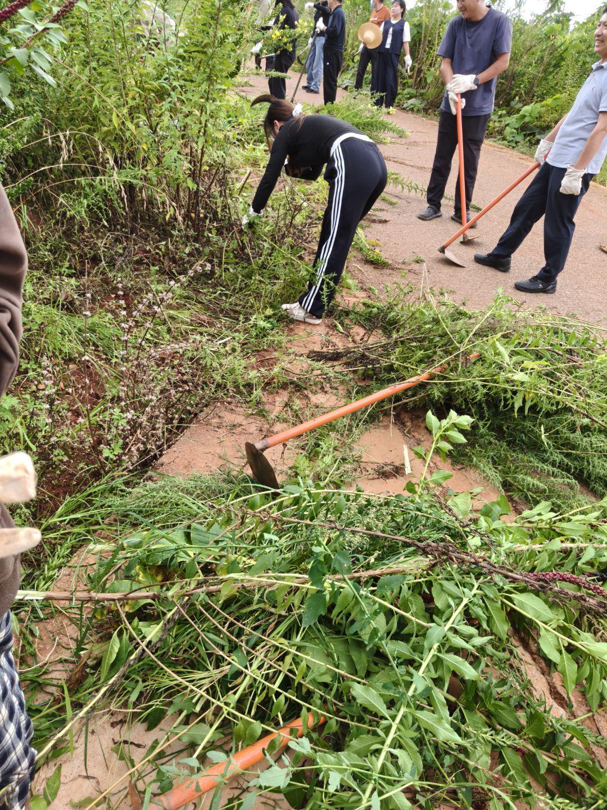
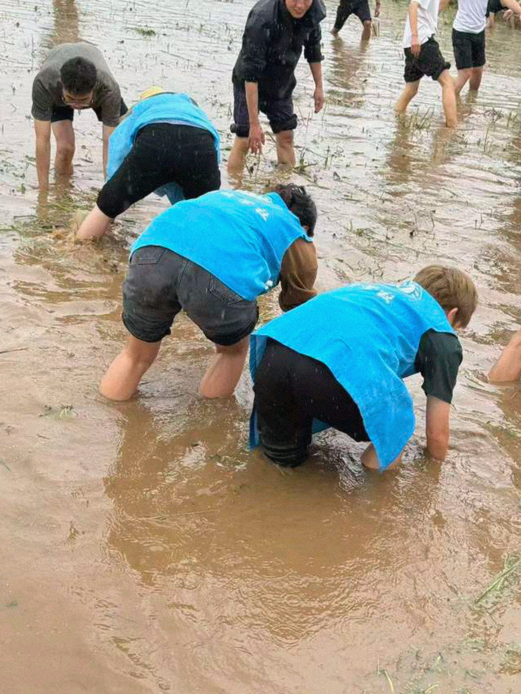
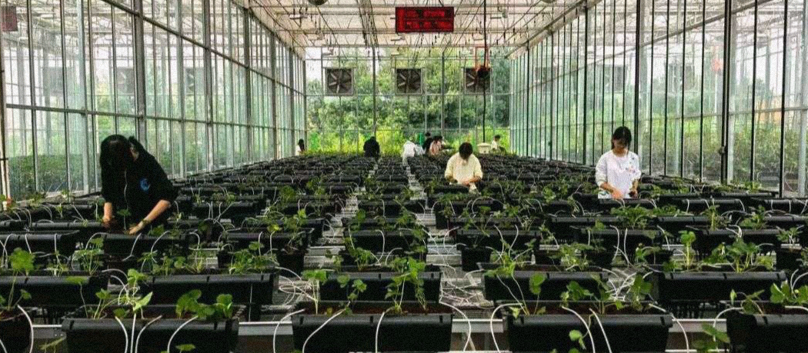
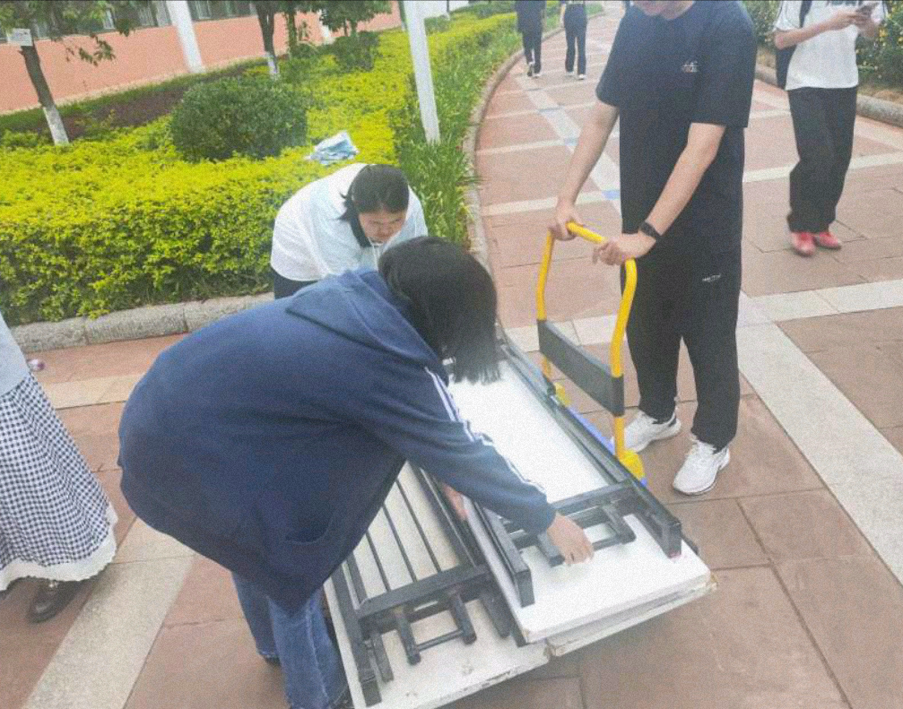
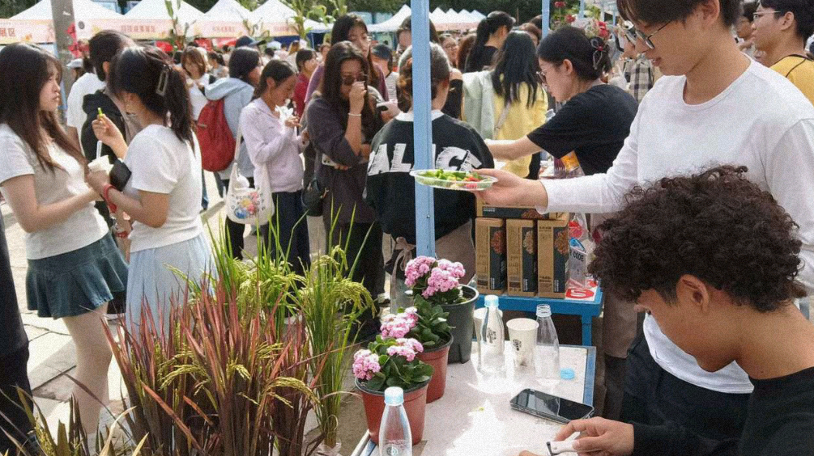
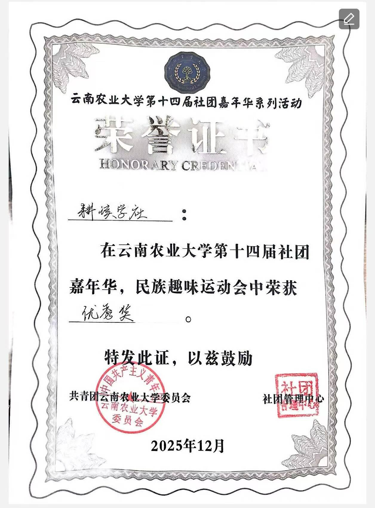

01
礼仪部
负责接待与礼仪展示工作，展现耕读学社的良好风貌。
以耕修身，以读明理，在劳动与典籍中锤炼青年品格
本社团成立于校内耕读文化建设阶段，以"知行合一、耕读砺学"为宗旨，面向全校热爱农耕实践、传统文化与乡土研学的同学开放招新。社团现有完善的部门架构，长期开展农耕劳作体验、田园实践研学、经典耕读文献研读、节气文化分享、农事科普讲座、田间劳动实践等特色活动，搭建理论学习与动手实践相结合的成长平台。
近年来，学社围绕校园劳动教育开展品牌建设，积极参与校园农耕实践基地运维、校园文化节劳动主题展演、下乡研学实践等项目，形成"读书明理、躬行践耕"的社团特色，累计带动多名社员感受传统耕读精神。
未来，社团将持续丰富实践活动形式，深耕劳动教育与传统文化传播，助力同学们在耕与读中锤炼品格、增长才干，打造具有校园辨识度的劳动文化类精品社团。
六个部门各司其职，共同守护耕读学社的日常运转
负责接待与礼仪展示工作，展现耕读学社的良好风貌。
监督纪律，维护社团秩序，保障各项活动规范开展。
统筹文书资料与日常内勤事务，协调社团各项工作有序推进。
策划执行各类社团活动，从农耕劳作到田园研学，落地耕读实践。
负责宣传排版，制作推文海报，对外传播耕读文化与社团风采。
管理社团收支，登记经费，保障社团财务公开透明、合规使用。
镜头定格耕读身影，泥土与汗水写就青春注脚


从田间劳作到校园服务，耕读学社以实践诠释"耕读砺学"

本次除草实践活动，社员们集结合力清除后山杂草，亲身体验农耕劳作。大家在泥土间体悟劳动辛劳，在协作中收获实践真知，真切感受农事劳动的独特意义。

组织社员前往校外水田体验插秧农事，沉浸式学习水稻种植流程。以实地劳作落实耕读教育，近距离感受传统农耕生产方式。

社团成员在校温室大棚完成草莓育苗、定植等栽种操作。全程参与作物生长管理，掌握园艺种植技能，收获亲手培育的成就感。

社团内部成员分工搬运整理活动物料，完成物资清点与布置筹备。强化团队协作意识，保障各项耕读实践活动顺利落地开展。

学社社员在校美食节负责摊位值守、农产品展示与科普讲解。结合耕读成果分享农事知识，向全校师生传播耕读文化特色。
每一份荣誉，都是耕读学子躬身实践的青春见证
